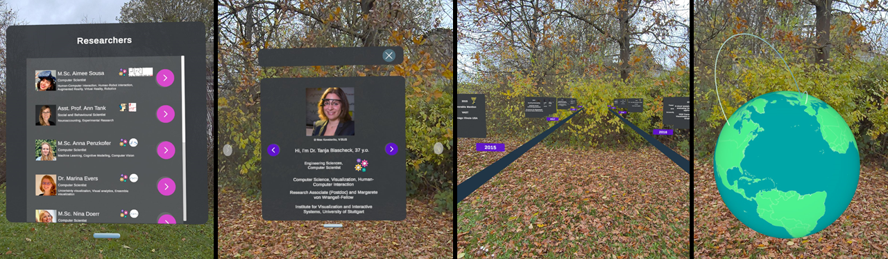

An Exploration of Augmented Reality to Increase the Visibility of Women in Research
An Exploration of Augmented Reality to Increase the Visibility of Women in Research

(opens in new tab)*contributed equally
Venue. MuC (2026)
This publication is open access
Abstract. Limited visibility of women in research deprives aspiring researchers of role models, reinforces stereotypes, and discourages academic persistence. Augmented Reality (AR), while still underexplored, offers an opportunity to integrate it into campus tours to increase the visibility of women researchers at universities. We contribute in three ways to the exploration of how AR can increase the visibility of women in research. First, we conducted a design workshop with Human-Computer Interaction (HCI) researchers (n=8; 7 women) to explore what information to present and how. Then we built an AR prototype that displays real data from women researchers (n=9) for use at university events or on campus tours. Finally, we discuss challenges and opportunities for future research and projects aimed at improving the visibility of women in research through AR.
Link to this page: